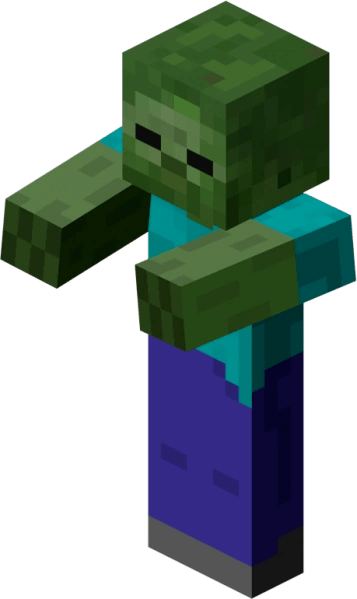
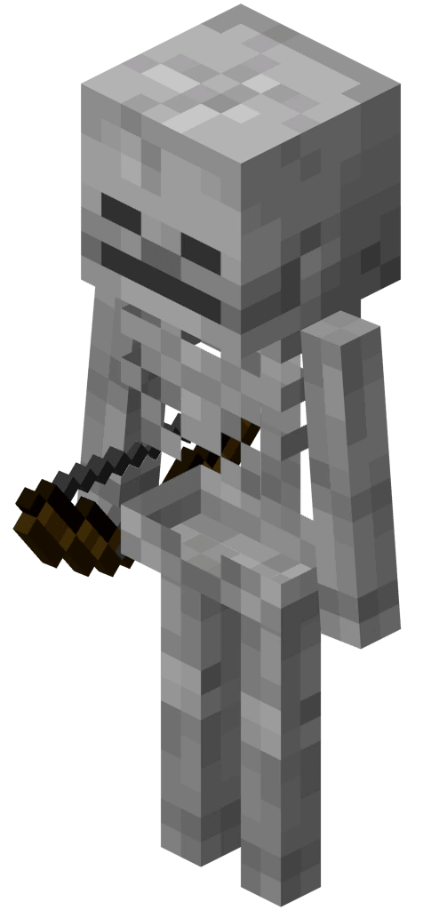
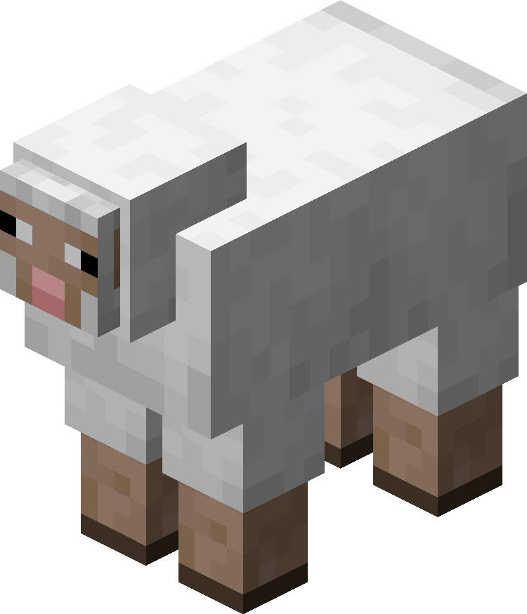
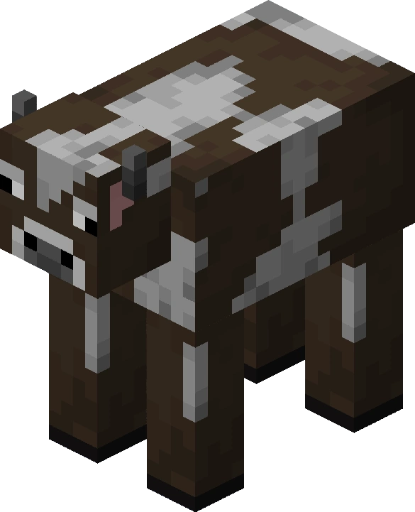
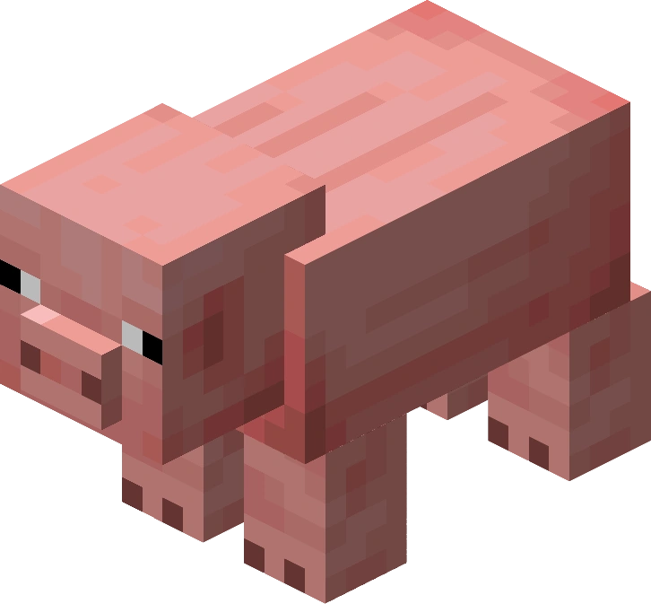

Мобы не могут появляться на прозрачных блоках, в воде (кроме спрутов, утопленников, рыб, дельфинов и стражей), в лаве или на неполных блоках (плиты, ступени). Исключение — спаунер мобов, который может поставить моба на любой блок, включая воздух.
Некоторые мобы (такие как Снежный голем или Иссушитель), чтобы появиться, должны быть «построены» игроком. Железный голем может как спауниться естественным образом, так и быть «построенным» игроком.
Окружение влияет на мобов также, как и на игрока: они подвержены физике, и могут получать урон от того же, что ранит и игрока (от огня, падения, удушья, атаки и т. д.). Некоторые мобы обладают иммунитетом к определённым видам урона, например, мобы Нижнего мира не горят.= Они могут передвигаться по лестницам.
Когда моб умирает, отображаются частицы дыма, выпадает дроп и сферы опыта.
Мобы замечают игрока на расстояния 16 блоков, хотя некоторые могут видеть и дальше. Ближе к ночи видимость уменьшается. В свою очередь игрок может услышать издаваемые мобами звуки также с 16 блоков. Мобы не видят сквозь большинство непрозрачных блоков, включая полупрозрачные (лёд, стекло, стеклянная панель). Они не будут ходить по рельсам, если их туда не столкнуть.
Злые мобы

Крипер. Обычный крипер способен отнять до 24,5 сердечек, а если рядом с ним ударит молния, то зеленый монстр становится вдвойне опаснее. Выжить без брони при взрыве почти невозможно, не говоря уже о том, что крипер разрушит в радиусе взрыва — 3–5 блоков. Спастись от него можно просто — достаточно построить забор вокруг базы и освещение ночью. Но во время исследований нужно быть предельно аккуратным: крипер может подобраться к вам сзади в темной пещере или свалиться на голову сверху. Такое случалось едва ли не с каждым игроком в Minecraft.

Зомби.Если зомби увидит игрока, или же жителя, то он начнет его преследовать, издавая воющие звуки. Если зомби находится в воде, то он не сгорит на солнце. Если вы умерли, а рядом будет зомби, то он может забрать вашу броню и меч. Если один зомби увидел жителя, тогда другой житель, стоящий рядом тоже пойдет атаковать.

Cкелет распространённый враждебный моб, являющийся нежитью и вооружённый луком.
Добрые мобы

Овца. Дружелюбный моб. Главное использование овец — получение шерсти и баранины. Овец можно подстричь ножницами и получить шерсть цвета самой овцы.

Корова. Распространённый дружелюбный моб, являющийся источником кожи, говядины и молока. Коровы обитают в травянистых биомах.

Cвинья. Дружелюбный моб, который впервые появился в версии Survival Test. Главная ценность свиней состоит в том, что они являются средством передвижения и возобновляемым источником свинины. Размеры свиньи — 1.1875 блока высота, 0.625 блока ширина и 1.25 блока длина. .